一、cobbler简介
cobbler是快速网络安装linux操作系统的服务，支持众多的Linux发行版本，如redhat、fedora、centos、debian、ubuntu和suse，也可以支持网络安装Windows。它相当于pxe的二次封装，将多中安装参数封装到一个菜单，用python编写，提供了cli和web的管理形式。
二、cobbler的工作流程
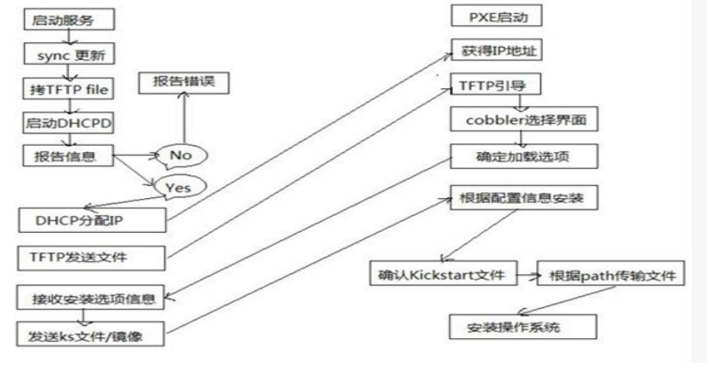
1）客户端裸机配置了从网络启动后，开机后会广播包请求dhcp服务器，请求dhcp给客户端裸机一个可用的ip地址
2）dhcp服务器收到请求后发送responese，包括其ip地址
3）客户端主机拿到ip地址后，再想cobbler 服务器发送请求OS引导文件的请求
4）cobbler服务器收到请求后，会告诉客户端主机os引导文件的名字和tftp服务器的ip和端口
5）客户端主机拿到tftp的ip地址后，会主动去请求其地址，下载系统引导文件
6）客户端下载好引导文件后，就执行该引导文件，确定加载信息，选择要安装的os，期间会再向cobbler服务器请求kickstart文件和os 镜像
7）cobbler服务器收到请求后，将其对应的kickstart文件和os镜像文件发送给客户端主机
8）客户端收到kickstart文件后，加载其文件并接受os镜像，然后安装该操作系统
以上就是cobbler的基本流程
三、安装cobbler，以及各个配置文件目录说明
[root@cobbler ~]# yum install cobbler dhcp -y
说明：cobbler默认安装会安装httpd、tftp-server、syslinux等这些包，没有安装dhcp包，所以要手动将dhcp一并安装
配置文件目录 /etc/cobbler
/etc/cobbler/settings : cobbler 主配置文件
/etc/cobbler/iso/: iso模板配置文件
/etc/cobbler/pxe: pxe模板文件
/etc/cobbler/power: 电源配置文件
/etc/cobbler/user.conf: web服务授权配置文件
/etc/cobbler/users.digest: web访问的用户名密码配置文件
/etc/cobbler/dhcp.template : dhcp服务器的的配置模板
/etc/cobbler/dnsmasq.template : dns服务器的配置模板
/etc/cobbler/tftpd.template : tftp服务的配置模板
/etc/cobbler/modules.conf : 模块的配置文件
数据目录
/var/lib/cobbler/config/: 用于存放distros，system，profiles 等信息配置文件
/var/lib/cobbler/triggers/: 用于存放用户定义的cobbler命令
/var/lib/cobbler/kickstart/: 默认存放kickstart文件
/var/lib/cobbler/loaders/: 存放各种引导程序
镜像目录
/var/www/cobbler/ks_mirror/: 导入的发行版系统的所有数据
/var/www/cobbler/images/ : 导入发行版kernel和initrd镜像用于远程网络启动
/var/www/cobbler/repo_mirror/: yum 仓库存储目录
日志目录
/var/log/cobbler/installing: 客户端安装日志
/var/log/cobbler/cobbler.log : cobbler日志
四、启动cobblerd、httpd服务
[root@cobbler ~]# systemctl start httpd cobblerd
五、检查cobbler环境（在执行cobbler check命令前要先确保httpd服务的开启，因为此命令能够执行的前提是cobbler已经正常启动，cobbler的启动又依赖httpd的启动）
[root@cobbler ~]# cobbler check
The following are potential configuration items that you may want to fix:
1 : The 'server' field in /etc/cobbler/settings must be set to something other than localhost, or kickstarting features will not work. This should be a resolvable hostname or IP for the boot server as reachable by all machines that will use it.
2 : For PXE to be functional, the 'next_server' field in /etc/cobbler/settings must be set to something other than 127.0.0.1, and should match the IP of the boot server on the PXE network.
3 : change 'disable' to 'no' in /etc/xinetd.d/tftp
4 : Some network boot-loaders are missing from /var/lib/cobbler/loaders, you may run 'cobbler get-loaders' to download them, or, if you only want to handle x86/x86_64 netbooting, you may ensure that you have installed a *recent* version of the syslinux package installed and can ignore this message entirely. Files in this directory, should you want to support all architectures, should include pxelinux.0, menu.c32, elilo.efi, and yaboot. The 'cobbler get-loaders' command is the easiest way to resolve these requirements.
5 : enable and start rsyncd.service with systemctl
6 : debmirror package is not installed, it will be required to manage debian deployments and repositories
7 : ksvalidator was not found, install pykickstart
8 : The default password used by the sample templates for newly installed machines (default_password_crypted in /etc/cobbler/settings) is still set to 'cobbler' and should be changed, try: "openssl passwd -1 -salt 'random-phrase-here' 'your-password-here'" to generate new one
9 : fencing tools were not found, and are required to use the (optional) power management features. install cman or fence-agents to use them
Restart cobblerd and then run 'cobbler sync' to apply changes.
[root@cobbler ~]#
说明：系统告诉我们cobbler环境存在9条问题。其实这9条中第3条我们不用管，如果是centos6作为cobbler服务器就需要改，centos7上不用管，第5条也不用管，第6条也不用管，它说的是debian的系统，第9条不用管，它说没有管理电源的工具；接下来我们一条一条的去解决这些问题
第1条系统告诉我们server配置失败，说我们配置的localhost不能正常的工作建议换成别的
vim /etc/cobbler/settings 搜索以server 开头 把对应的ip改成 server 192.168.0.105
第2条系统告诉我们在/etc/cobbler/settings next_server 不能说127.0.0.1 。编辑/etc/cobbler/settings 搜索next_server 把对应的ip修改成 next_server: 192.168.0.105
第4条系统告诉我们需要运行cobbler get-loaders 命令去网络上下载安装系统的必要文件。
第7条系统告诉我们没有安装pykickstart这个包，我们可以用yum install pykickstart -y 安装即可
第8条系统说需要更改default_password_crypted ，不更改后续装的系统的root口令不安全 ，我们可以用openssl passwd -1 -salt 'random-phrase-here' 'your-password-here'命令来生成口令。编辑/etc/cobbler/settings 搜索default_passwd 将default_password_crypted 后面的字符串修改成我们刚才用命令生成的加密口令字符串。
整改了以上几条后我们需要重新启动cobblerd服务然后在运行cobbler check
[root@cobbler ~]# systemctl restart cobblerd
[root@cobbler ~]# cobbler check
The following are potential configuration items that you may want to fix:
1 : change 'disable' to 'no' in /etc/xinetd.d/tftp
2 : Some network boot-loaders are missing from /var/lib/cobbler/loaders, you may run 'cobbler get-loaders' to download them, or, if you only want to handle x86/x86_64 netbooting, you may ensure that you have installed a *recent* version of the syslinux package installed and can ignore this message entirely. Files in this directory, should you want to support all architectures, should include pxelinux.0, menu.c32, elilo.efi, and yaboot. The 'cobbler get-loaders' command is the easiest way to resolve these requirements.
3 : enable and start rsyncd.service with systemctl
4 : debmirror package is not installed, it will be required to manage debian deployments and repositories
5 : fencing tools were not found, and are required to use the (optional) power management features. install cman or fence-agents to use them
Restart cobblerd and then run 'cobbler sync' to apply changes.
[root@cobbler ~]# cobbler get-loaders
task started: 2019-12-23_032218_get_loaders
task started (id=Download Bootloader Content, time=Mon Dec 23 03:22:18 2019)
downloading https://cobbler.github.io/loaders/README to /var/lib/cobbler/loaders/README
Exception occured: <class 'urlgrabber.grabber.URLGrabError'>
Exception value: [Errno 14] curl#35 - "TCP connection reset by peer"
Exception Info:
File "/usr/lib/python2.7/site-packages/cobbler/remote.py", line 82, in run
rc = self._run(self)
File "/usr/lib/python2.7/site-packages/cobbler/remote.py", line 176, in runner
return self.remote.api.dlcontent(self.options.get("force",False), self.logger)
File "/usr/lib/python2.7/site-packages/cobbler/api.py", line 735, in dlcontent
return grabber.run(force)
File "/usr/lib/python2.7/site-packages/cobbler/action_dlcontent.py", line 73, in run
urlgrabber.grabber.urlgrab(src, filename=dst, proxies=proxies)
File "/usr/lib/python2.7/site-packages/urlgrabber/grabber.py", line 773, in urlgrab
return default_grabber.urlgrab(url, filename, **kwargs)
File "/usr/lib/python2.7/site-packages/urlgrabber/grabber.py", line 1220, in urlgrab
return _run_callback(opts.failfunc, opts)
File "/usr/lib/python2.7/site-packages/urlgrabber/grabber.py", line 1071, in _run_callback
return cb(obj)
File "/usr/lib/python2.7/site-packages/urlgrabber/grabber.py", line 1065, in _do_raise
raise obj.exception
!!! TASK FAILED !!!
[root@cobbler ~]# systemctl start tftp
[root@cobbler ~]# systemctl status tftp
● tftp.service - Tftp Server
Loaded: loaded (/usr/lib/systemd/system/tftp.service; indirect; vendor preset: disabled)
Active: active (running) since 一 2019-12-23 03:23:40 CST; 6s ago
Docs: man:in.tftpd
Main PID: 7962 (in.tftpd)
CGroup: /system.slice/tftp.service
└─7962 /usr/sbin/in.tftpd -s /var/lib/tftpboot
12月 23 03:23:40 cobbler systemd[1]: Started Tftp Server.
[root@cobbler ~]# cobbler get-loaders
task started: 2019-12-23_032359_get_loaders
task started (id=Download Bootloader Content, time=Mon Dec 23 03:23:59 2019)
path /var/lib/cobbler/loaders/README already exists, not overwriting existing content, use --force if you wish to update
downloading https://cobbler.github.io/loaders/COPYING.elilo to /var/lib/cobbler/loaders/COPYING.elilo
downloading https://cobbler.github.io/loaders/COPYING.yaboot to /var/lib/cobbler/loaders/COPYING.yaboot
downloading https://cobbler.github.io/loaders/COPYING.syslinux to /var/lib/cobbler/loaders/COPYING.syslinux
downloading https://cobbler.github.io/loaders/elilo-3.8-ia64.efi to /var/lib/cobbler/loaders/elilo-ia64.efi
downloading https://cobbler.github.io/loaders/yaboot-1.3.17 to /var/lib/cobbler/loaders/yaboot
downloading https://cobbler.github.io/loaders/pxelinux.0-3.86 to /var/lib/cobbler/loaders/pxelinux.0
downloading https://cobbler.github.io/loaders/menu.c32-3.86 to /var/lib/cobbler/loaders/menu.c32
downloading https://cobbler.github.io/loaders/grub-0.97-x86.efi to /var/lib/cobbler/loaders/grub-x86.efi
downloading https://cobbler.github.io/loaders/grub-0.97-x86_64.efi to /var/lib/cobbler/loaders/grub-x86_64.efi
*** TASK COMPLETE ***
[root@cobbler ~]#
说明：以上执行 cobbler get-loaders报了一个错误，原因是tftp服务没有启动，启动了tftp服务后恢复正常。从下载的信息可以看到，cobbler默认把下载下来的文件放在了/var/lib/cobbler/loaders 这个目录在后续我们安装系统时，基本上没有用，我们需要把这些文件移动到tftp服务器的工作目录下。怎么移动呢？执行cobbler sync即可
[root@cobbler ~]# cobbler sync
task started: 2019-12-22_194040_sync
task started (id=Sync, time=Sun Dec 22 19:40:40 2019)
running pre-sync triggers
cleaning trees
removing: /var/lib/tftpboot/grub/images
copying bootloaders
trying hardlink /var/lib/cobbler/loaders/pxelinux.0 -> /var/lib/tftpboot/pxelinux.0
trying hardlink /var/lib/cobbler/loaders/menu.c32 -> /var/lib/tftpboot/menu.c32
trying hardlink /var/lib/cobbler/loaders/yaboot -> /var/lib/tftpboot/yaboot
trying hardlink /usr/share/syslinux/memdisk -> /var/lib/tftpboot/memdisk
trying hardlink /var/lib/cobbler/loaders/grub-x86.efi -> /var/lib/tftpboot/grub/grub-x86.efi
trying hardlink /var/lib/cobbler/loaders/grub-x86_64.efi -> /var/lib/tftpboot/grub/grub-x86_64.efi
copying distros to tftpboot
copying images
generating PXE configuration files
generating PXE menu structure
rendering TFTPD files
generating /etc/xinetd.d/tftp
cleaning link caches
running post-sync triggers
running python triggers from /var/lib/cobbler/triggers/sync/post/*
running python trigger cobbler.modules.sync_post_restart_services
running shell triggers from /var/lib/cobbler/triggers/sync/post/*
running python triggers from /var/lib/cobbler/triggers/change/*
running python trigger cobbler.modules.manage_genders
running python trigger cobbler.modules.scm_track
running shell triggers from /var/lib/cobbler/triggers/change/*
*** TASK COMPLETE ***
[root@cobbler ~]#
说明：执行cobbler sync命令后，我们可以看到系统给tftp的工作目录/var/lib/tftpboot目录下创建了一些连接文件，这里需要注意一点，我们在/etc/cobbler/settings文件中若配置了manage_dhcp：1，这里执行cobbler sync会报一个错误，原因是cobbler会尝试的去启动dhcp服务，在此之前我们没有配置任何dhcp的配置文件，所以dhcp服务是启动不起来的，需要我们去修改cobbler的dhcp的模板文件然后在同步就不会报错
# set to 1 to enable Cobbler's DHCP management features.
# the choice of DHCP management engine is in /etc/cobbler/modules.conf
manage_dhcp: 1
"/etc/cobbler/settings" 468L, 19925C 已写入
[root@cobbler ~]# systemctl restart cobblerd
[root@cobbler ~]# cobbler sync
task started: 2019-12-22_194934_sync
task started (id=Sync, time=Sun Dec 22 19:49:34 2019)
running pre-sync triggers
cleaning trees
removing: /var/lib/tftpboot/pxelinux.cfg/default
removing: /var/lib/tftpboot/grub/images
removing: /var/lib/tftpboot/grub/grub-x86.efi
removing: /var/lib/tftpboot/grub/grub-x86_64.efi
removing: /var/lib/tftpboot/grub/efidefault
removing: /var/lib/tftpboot/s390x/profile_list
copying bootloaders
trying hardlink /var/lib/cobbler/loaders/grub-x86.efi -> /var/lib/tftpboot/grub/grub-x86.efi
trying hardlink /var/lib/cobbler/loaders/grub-x86_64.efi -> /var/lib/tftpboot/grub/grub-x86_64.efi
copying distros to tftpboot
copying images
generating PXE configuration files
generating PXE menu structure
rendering DHCP files
generating /etc/dhcp/dhcpd.conf
rendering TFTPD files
generating /etc/xinetd.d/tftp
cleaning link caches
running post-sync triggers
running python triggers from /var/lib/cobbler/triggers/sync/post/*
running python trigger cobbler.modules.sync_post_restart_services
running: dhcpd -t -q
received on stdout:
received on stderr:
running: service dhcpd restart
received on stdout:
received on stderr: Redirecting to /bin/systemctl restart dhcpd.service
Job for dhcpd.service failed because the control process exited with error code. See "systemctl status dhcpd.service" and "journalctl -xe" for details.
Exception occured: <class 'cobbler.cexceptions.CX'>
Exception value: 'cobbler trigger failed: cobbler.modules.sync_post_restart_services'
Exception Info:
File "/usr/lib/python2.7/site-packages/cobbler/remote.py", line 82, in run
rc = self._run(self)
File "/usr/lib/python2.7/site-packages/cobbler/remote.py", line 181, in runner
return self.remote.api.sync(self.options.get("verbose",False),logger=self.logger)
File "/usr/lib/python2.7/site-packages/cobbler/api.py", line 763, in sync
return sync.run()
File "/usr/lib/python2.7/site-packages/cobbler/action_sync.py", line 144, in run
utils.run_triggers(self.api, None, "/var/lib/cobbler/triggers/sync/post/*", logger=self.logger)
File "/usr/lib/python2.7/site-packages/cobbler/utils.py", line 928, in run_triggers
raise CX("cobbler trigger failed: %s" % m.__name__)
!!! TASK FAILED !!!
[root@cobbler ~]# vim /etc/cobbler/dhcp.template
# ******************************************************************
# Cobbler managed dhcpd.conf file
#
# generated from cobbler dhcp.conf template ($date)
# Do NOT make changes to /etc/dhcpd.conf. Instead, make your changes
# in /etc/cobbler/dhcp.template, as /etc/dhcpd.conf will be
# overwritten.
#
# ******************************************************************
ddns-update-style interim;
allow booting;
allow bootp;
ignore client-updates;
set vendorclass = option vendor-class-identifier;
option pxe-system-type code 93 = unsigned integer 16;
subnet 192.168.0.0 netmask 255.255.255.0 {
option routers 192.168.0.1;
option domain-name-servers 192.168.0.1;
option subnet-mask 255.255.255.0;
range dynamic-bootp 192.168.0.200 192.168.0.254;
default-lease-time 21600;
max-lease-time 43200;
next-server $next_server;
class "pxeclients" {
match if substring (option vendor-class-identifier, 0, 9) = "PXEClient";
if option pxe-system-type = 00:02 {
filename "ia64/elilo.efi";
} else if option pxe-system-type = 00:06 {
filename "grub/grub-x86.efi";
} else if option pxe-system-type = 00:07 {
filename "grub/grub-x86_64.efi";
} else if option pxe-system-type = 00:09 {
filename "grub/grub-x86_64.efi";
} else {
filename "pxelinux.0";
}
}
}
#for dhcp_tag in $dhcp_tags.keys():
## group could be subnet if your dhcp tags line up with your subnets
## or really any valid dhcpd.conf construct ... if you only use the
## default dhcp tag in cobbler, the group block can be deleted for a
## flat configuration
# group for Cobbler DHCP tag: $dhcp_tag
group {
#for mac in $dhcp_tags[$dhcp_tag].keys():
#set iface = $dhcp_tags[$dhcp_tag][$mac]
host $iface.name {
#if $iface.interface_type == "infiniband":
option dhcp-client-identifier = $mac;
#else
hardware ethernet $mac;
#end if
#if $iface.ip_address:
fixed-address $iface.ip_address;
#end if
#if $iface.hostname:
option host-name "$iface.hostname";
#end if
#if $iface.netmask:
option subnet-mask $iface.netmask;
#end if
#if $iface.gateway:
option routers $iface.gateway;
#end if
#if $iface.enable_gpxe:
if exists user-class and option user-class = "gPXE" {
filename "http://$cobbler_server/cblr/svc/op/gpxe/system/$iface.owner";
} else if exists user-class and option user-class = "iPXE" {
filename "http://$cobbler_server/cblr/svc/op/gpxe/system/$iface.owner";
} else {
filename "undionly.kpxe";
}
#else
filename "$iface.filename";
#end if
## Cobbler defaults to $next_server, but some users
## may like to use $iface.system.server for proxied setups
next-server $next_server;
## next-server $iface.next_server;
}
#end for
}
#end for
"/etc/cobbler/dhcp.template" 92L, 3177C 已写入
[root@cobbler ~]#
说明：如果没有配置manage_dhcp:1我们需要自己手动的去写dhcp的配置文件，配置manage_dhcp:1就表示cobbler用模板文件给我们生成dhcp的配置文件，我们只需要根据自己的环境来更改模板文件就好
[root@cobbler ~]# cobbler sync
task started: 2019-12-22_195414_sync
task started (id=Sync, time=Sun Dec 22 19:54:14 2019)
running pre-sync triggers
cleaning trees
removing: /var/lib/tftpboot/pxelinux.cfg/default
removing: /var/lib/tftpboot/grub/images
removing: /var/lib/tftpboot/grub/grub-x86.efi
removing: /var/lib/tftpboot/grub/grub-x86_64.efi
removing: /var/lib/tftpboot/grub/efidefault
removing: /var/lib/tftpboot/s390x/profile_list
copying bootloaders
trying hardlink /var/lib/cobbler/loaders/grub-x86.efi -> /var/lib/tftpboot/grub/grub-x86.efi
trying hardlink /var/lib/cobbler/loaders/grub-x86_64.efi -> /var/lib/tftpboot/grub/grub-x86_64.efi
copying distros to tftpboot
copying images
generating PXE configuration files
generating PXE menu structure
rendering DHCP files
generating /etc/dhcp/dhcpd.conf
rendering TFTPD files
generating /etc/xinetd.d/tftp
cleaning link caches
running post-sync triggers
running python triggers from /var/lib/cobbler/triggers/sync/post/*
running python trigger cobbler.modules.sync_post_restart_services
running: dhcpd -t -q
received on stdout:
received on stderr:
running: service dhcpd restart
received on stdout:
received on stderr: Redirecting to /bin/systemctl restart dhcpd.service
running shell triggers from /var/lib/cobbler/triggers/sync/post/*
running python triggers from /var/lib/cobbler/triggers/change/*
running python trigger cobbler.modules.manage_genders
running python trigger cobbler.modules.scm_track
running shell triggers from /var/lib/cobbler/triggers/change/*
*** TASK COMPLETE ***
[root@cobbler ~]# tree /var/lib/tftpboot/
/var/lib/tftpboot/
├── boot
│ └── grub
│ └── menu.lst
├── etc
├── grub
│ ├── efidefault
│ ├── grub-x86_64.efi
│ ├── grub-x86.efi
│ └── images -> ../images
├── images
├── images2
├── memdisk
├── menu.c32
├── ppc
├── pxelinux.0
├── pxelinux.cfg
│ └── default
├── s390x
│ └── profile_list
└── yaboot
10 directories, 10 files
[root@cobbler ~]# ss -ntlu
Netid State Recv-Q Send-Q Local Address:Port Peer Address:Port
udp UNCONN 0 0 *:67 *:*
udp UNCONN 0 0 127.0.0.1:323 *:*
udp UNCONN 0 0 :::69 :::*
udp UNCONN 0 0 ::1:323 :::*
tcp LISTEN 0 128 *:22 *:*
tcp LISTEN 0 100 127.0.0.1:25 *:*
tcp LISTEN 0 5 127.0.0.1:25151 *:*
tcp LISTEN 0 128 :::80 :::*
tcp LISTEN 0 32 :::21 :::*
tcp LISTEN 0 128 :::22 :::*
tcp LISTEN 0 100 ::1:25 :::*
[root@cobbler ~]# systemctl status dhcpd
● dhcpd.service - DHCPv4 Server Daemon
Loaded: loaded (/usr/lib/systemd/system/dhcpd.service; disabled; vendor preset: disabled)
Active: active (running) since 日 2019-12-22 19:54:15 CST; 52s ago
Docs: man:dhcpd(8)
man:dhcpd.conf(5)
Main PID: 8807 (dhcpd)
Status: "Dispatching packets..."
CGroup: /system.slice/dhcpd.service
└─8807 /usr/sbin/dhcpd -f -cf /etc/dhcp/dhcpd.conf -user dhcpd -group dhcpd --no-pid
12月 22 19:54:15 cobbler dhcpd[8807]: Copyright 2004-2013 Internet Systems Consortium.
12月 22 19:54:15 cobbler dhcpd[8807]: All rights reserved.
12月 22 19:54:15 cobbler dhcpd[8807]: For info, please visit https://www.isc.org/software/dhcp/
12月 22 19:54:15 cobbler dhcpd[8807]: Not searching LDAP since ldap-server, ldap-port and ldap-base-dn we... file
12月 22 19:54:15 cobbler dhcpd[8807]: Wrote 0 class decls to leases file.
12月 22 19:54:15 cobbler dhcpd[8807]: Wrote 0 leases to leases file.
12月 22 19:54:15 cobbler dhcpd[8807]: Listening on LPF/ens33/00:0c:29:fb:66:a2/192.168.0.0/24
12月 22 19:54:15 cobbler dhcpd[8807]: Sending on LPF/ens33/00:0c:29:fb:66:a2/192.168.0.0/24
12月 22 19:54:15 cobbler systemd[1]: Started DHCPv4 Server Daemon.
12月 22 19:54:15 cobbler dhcpd[8807]: Sending on Socket/fallback/fallback-net
Hint: Some lines were ellipsized, use -l to show in full.
[root@cobbler ~]#
说明：可以看到tftp的工作目录里也有东西了，dhcpd服务也启动了，到此cobbler的基础服务都已搭建配置完毕，接下来是导入系统镜像
六、导入系统镜像（前提是先挂载系统镜像）
[root@cobbler ~]# lsblk
NAME MAJ:MIN RM SIZE RO TYPE MOUNTPOINT
sda 8:0 0 40G 0 disk
├─sda1 8:1 0 1G 0 part /boot
└─sda2 8:2 0 39G 0 part
├─centos-root 253:0 0 37G 0 lvm /
└─centos-swap 253:1 0 2G 0 lvm [SWAP]
sr0 11:0 1 3.7G 0 rom
sr1 11:1 1 4.2G 0 rom
[root@cobbler ~]# mount /dev/sr0 centos6
mount: /dev/sr0 写保护，将以只读方式挂载
[root@cobbler ~]# mount /dev/sr1 centos7
mount: /dev/sr1 写保护，将以只读方式挂载
[root@cobbler ~]#
导入镜像
[root@cobbler ~]# cobbler import --path=/root/centos7 --name=centos7-x86_64 --arch=x86_64
task started: 2019-12-22_200632_import
task started (id=Media import, time=Sun Dec 22 20:06:32 2019)
Found a candidate signature: breed=redhat, version=rhel6
Found a candidate signature: breed=redhat, version=rhel7
Found a matching signature: breed=redhat, version=rhel7
Adding distros from path /var/www/cobbler/ks_mirror/centos7-x86_64:
creating new distro: centos7-x86_64
trying symlink: /var/www/cobbler/ks_mirror/centos7-x86_64 -> /var/www/cobbler/links/centos7-x86_64
creating new profile: centos7-x86_64
associating repos
checking for rsync repo(s)
checking for rhn repo(s)
checking for yum repo(s)
starting descent into /var/www/cobbler/ks_mirror/centos7-x86_64 for centos7-x86_64
processing repo at : /var/www/cobbler/ks_mirror/centos7-x86_64
need to process repo/comps: /var/www/cobbler/ks_mirror/centos7-x86_64
looking for /var/www/cobbler/ks_mirror/centos7-x86_64/repodata/*comps*.xml
Keeping repodata as-is :/var/www/cobbler/ks_mirror/centos7-x86_64/repodata
*** TASK COMPLETE ***
[root@cobbler ~]#
[root@cobbler ~]# cobbler import --path=/root/centos6 --name=centos6.9-x86_64 --arch=x86_64
task started: 2019-12-22_200752_import
task started (id=Media import, time=Sun Dec 22 20:07:52 2019)
Found a candidate signature: breed=redhat, version=rhel6
Found a matching signature: breed=redhat, version=rhel6
Adding distros from path /var/www/cobbler/ks_mirror/centos6.9-x86_64:
creating new distro: centos6.9-x86_64
trying symlink: /var/www/cobbler/ks_mirror/centos6.9-x86_64 -> /var/www/cobbler/links/centos6.9-x86_64
creating new profile: centos6.9-x86_64
associating repos
checking for rsync repo(s)
checking for rhn repo(s)
checking for yum repo(s)
starting descent into /var/www/cobbler/ks_mirror/centos6.9-x86_64 for centos6.9-x86_64
processing repo at : /var/www/cobbler/ks_mirror/centos6.9-x86_64
need to process repo/comps: /var/www/cobbler/ks_mirror/centos6.9-x86_64
looking for /var/www/cobbler/ks_mirror/centos6.9-x86_64/repodata/*comps*.xml
Keeping repodata as-is :/var/www/cobbler/ks_mirror/centos6.9-x86_64/repodata
*** TASK COMPLETE ***
[root@cobbler ~]#
说明：若没有指定kickstart应答文件，默认会生成一个最小安装的应答文件
查看启动菜单文件
root@cobbler ~]# cat /var/lib/tftpboot/pxelinux.cfg/default
DEFAULT menu
PROMPT 0
MENU TITLE Cobbler | http://cobbler.github.io/
TIMEOUT 200
TOTALTIMEOUT 6000
ONTIMEOUT local
LABEL local
MENU LABEL (local)
MENU DEFAULT
LOCALBOOT -1
LABEL centos6.9-x86_64
kernel /images/centos6.9-x86_64/vmlinuz
MENU LABEL centos6.9-x86_64
append initrd=/images/centos6.9-x86_64/initrd.img ksdevice=bootif lang= kssendmac text ks=http://192.168.0.105/cblr/svc/op/ks/profile/centos6.9-x86_64
ipappend 2
LABEL centos7-x86_64
kernel /images/centos7-x86_64/vmlinuz
MENU LABEL centos7-x86_64
append initrd=/images/centos7-x86_64/initrd.img ksdevice=bootif lang= kssendmac text ks=http://192.168.0.105/cblr/svc/op/ks/profile/centos7-x86_64
ipappend 2
MENU end
[root@cobbler ~]#
说明：导入了镜像cobbler默认添加镜像信息到启动菜单文件里
至此基于CLI的cobbler服务器就搭建好了
测试
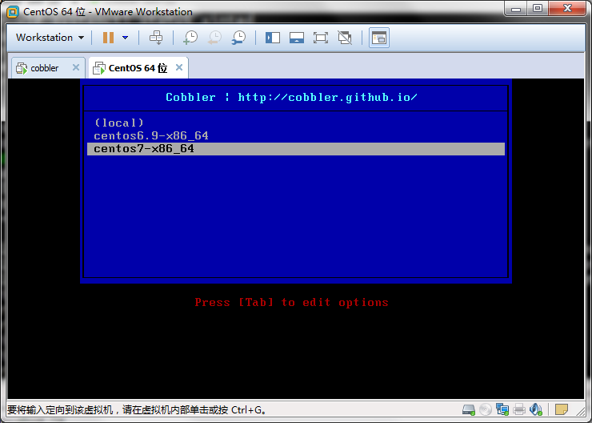
说明：可以看到我们导入的镜像的菜单已经出来了
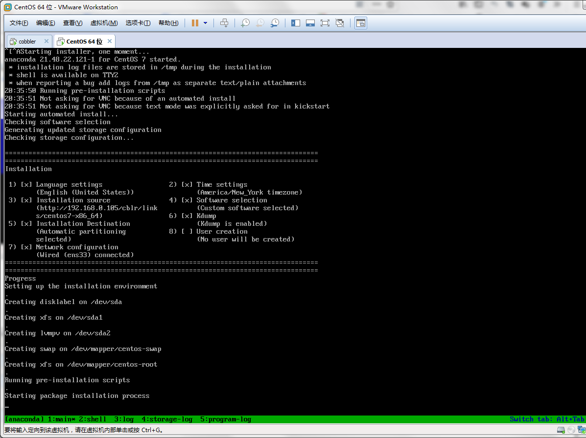
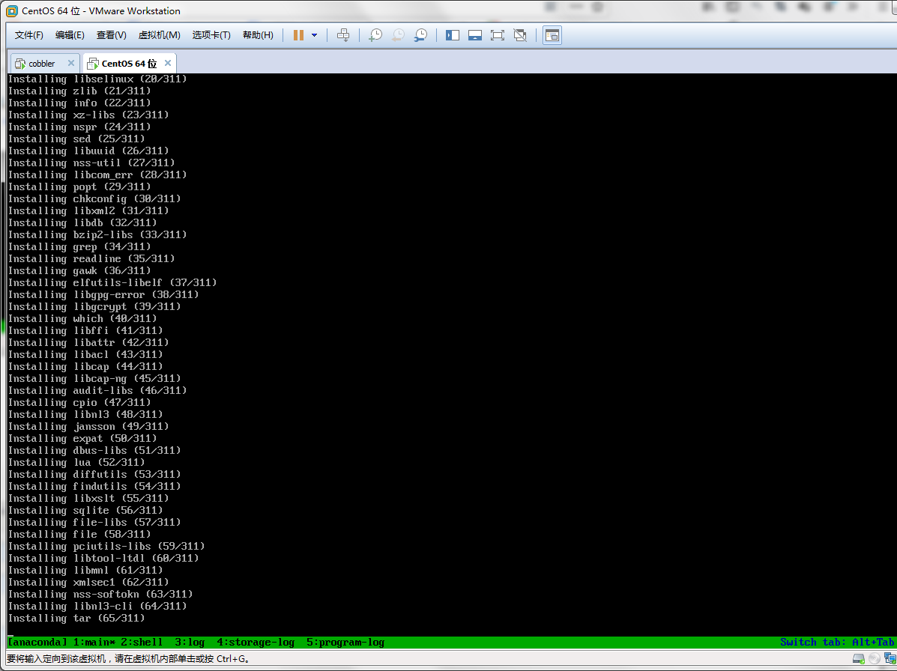
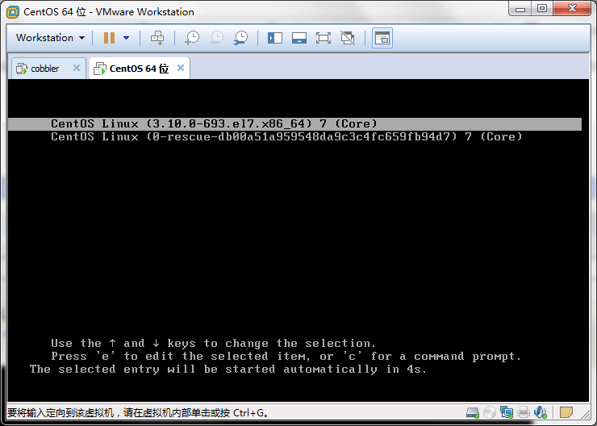
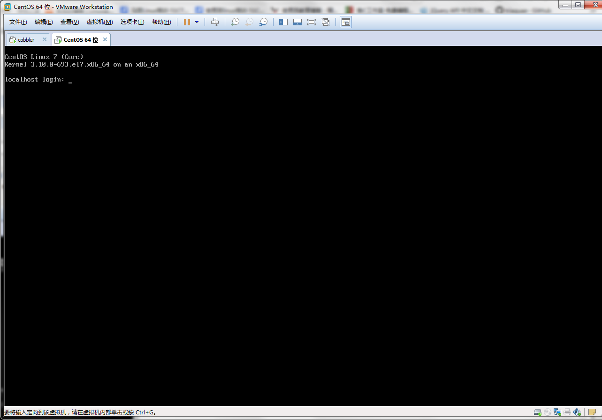
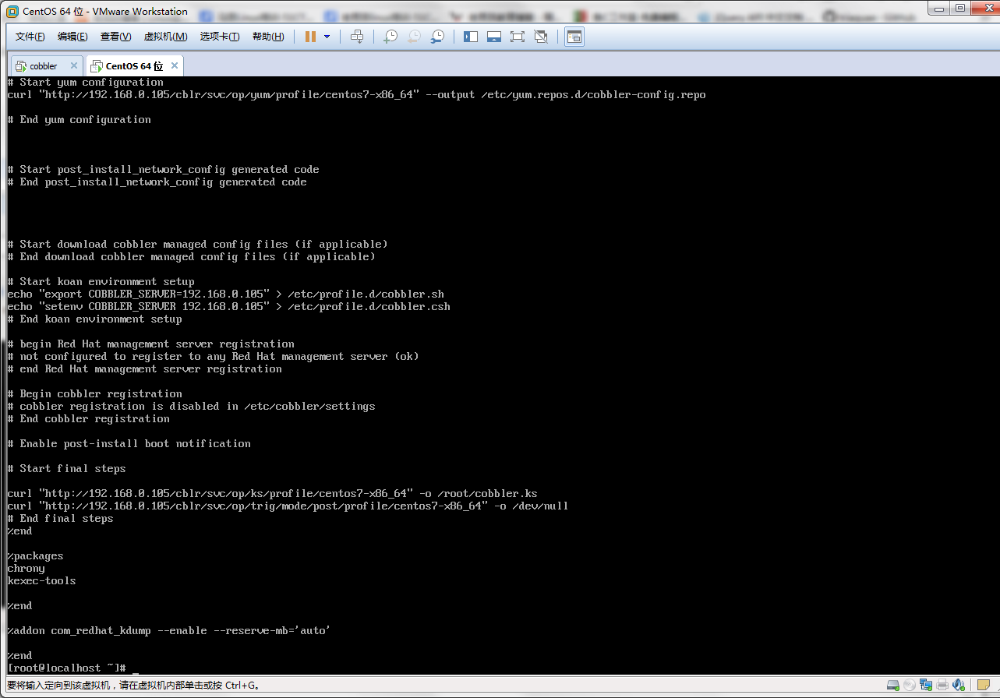
说明：到此基于CLI管理的cobbler服务器测试已经通过，可以正常的实现自动化安装系统
七、cobbler管理
1）查看已经导入的镜像列表
[root@cobbler ~]# cobbler distro list
centos6.9-x86_64
centos7-x86_64
2）查看启动菜单列表
[root@cobbler ~]# cobbler profile list
centos6.9-x86_64
centos7-x86_64
[root@cobbler ~]#
3）增加新的菜单项
[root@cobbler ~]# cobbler profile add --name=centos7-desktop --distro=centos7-x86_64 --kickstart=/var/lib/cobbler/kickstarts/centos7-desktop.cfg
[root@cobbler ~]# cobbler profile list
centos6.9-x86_64
centos7-desktop
centos7-x86_64
[root@cobbler ~]# cat /var/lib/tftpboot/pxelinux.cfg/default
DEFAULT menu
PROMPT 0
MENU TITLE Cobbler | http://cobbler.github.io/
TIMEOUT 200
TOTALTIMEOUT 6000
ONTIMEOUT local
LABEL local
MENU LABEL (local)
MENU DEFAULT
LOCALBOOT -1
LABEL centos6.9-x86_64
kernel /images/centos6.9-x86_64/vmlinuz
MENU LABEL centos6.9-x86_64
append initrd=/images/centos6.9-x86_64/initrd.img ksdevice=bootif lang= kssendmac text ks=http://192.168.0.105/cblr/svc/op/ks/profile/centos6.9-x86_64
ipappend 2
LABEL centos7-desktop
kernel /images/centos7-x86_64/vmlinuz
MENU LABEL centos7-desktop
append initrd=/images/centos7-x86_64/initrd.img ksdevice=bootif lang= kssendmac text ks=http://192.168.0.105/cblr/svc/op/ks/profile/centos7-desktop
ipappend 2
LABEL centos7-x86_64
kernel /images/centos7-x86_64/vmlinuz
MENU LABEL centos7-x86_64
append initrd=/images/centos7-x86_64/initrd.img ksdevice=bootif lang= kssendmac text ks=http://192.168.0.105/cblr/svc/op/ks/profile/centos7-x86_64
ipappend 2
MENU end
[root@cobbler ~]#
说明：指定kickstart应答文件，需要将其直接制作好的应答文件放入到/var/lib/cobbler/kickstarts/目录下；如果是自己制作的kickstart应答文件，还需要将其里的url 改成url --url=$tree，这样cobbler就可以根据自己的环境去找yum仓库；有关kickstart应答文件的制作请参考本人博客https://www.cnblogs.com/qiuhom-1874/p/11789583.html
4）删除原有的菜单启动项
[root@cobbler ~]# cobbler profile list
centos6.9-x86_64
centos7-desktop
centos7-x86_64
[root@cobbler ~]# cobbler profile remove --name=centos7-x86_64
[root@cobbler ~]# cobbler profile list
centos6.9-x86_64
centos7-desktop
[root@cobbler ~]#
5）更改现有的菜单启动项的名称
[root@cobbler ~]# cobbler profile list
centos6.9-x86_64
centos7-desktop
[root@cobbler ~]# cobbler profile rename --name=centos6.9-x86_64 --newname=centos6-mini-x86_64
[root@cobbler ~]# cobbler profile list
centos6-mini-x86_64
centos7-desktop
[root@cobbler ~]#
6）显示菜单项的详细内容
[root@cobbler ~]# cobbler profile report --name=centos7-desktop
Name : centos7-desktop
TFTP Boot Files : {}
Comment :
DHCP Tag : default
Distribution : centos7-x86_64
Enable gPXE? : 0
Enable PXE Menu? : 1
Fetchable Files : {}
Kernel Options : {}
Kernel Options (Post Install) : {}
Kickstart : /var/lib/cobbler/kickstarts/centos7-desktop.cfg
Kickstart Metadata : {}
Management Classes : []
Management Parameters : <<inherit>>
Name Servers : []
Name Servers Search Path : []
Owners : ['admin']
Parent Profile :
Internal proxy :
Red Hat Management Key : <<inherit>>
Red Hat Management Server : <<inherit>>
Repos : []
Server Override : <<inherit>>
Template Files : {}
Virt Auto Boot : 1
Virt Bridge : xenbr0
Virt CPUs : 1
Virt Disk Driver Type : raw
Virt File Size(GB) : 5
Virt Path :
Virt RAM (MB) : 512
Virt Type : xenpv
[root@cobbler ~]#
八、实现cobbler基于web管理
1）安装cobbler-web
[root@cobbler ~]# yum install cobbler-web -y
2）查看cobbler-web安装了那些东西
[root@cobbler ~]# rpm -ql cobbler-web
/etc/httpd/conf.d/cobbler_web.conf
/usr/share/cobbler/web
省略部分内容……
说明：可以看到cobbler-web包生成了一个http的子配置文件，要想子配置文件生效需要重启httpd服务
3）重启httpd服务
[root@cobbler ~]# systemctl restart httpd
4）用浏览器登录
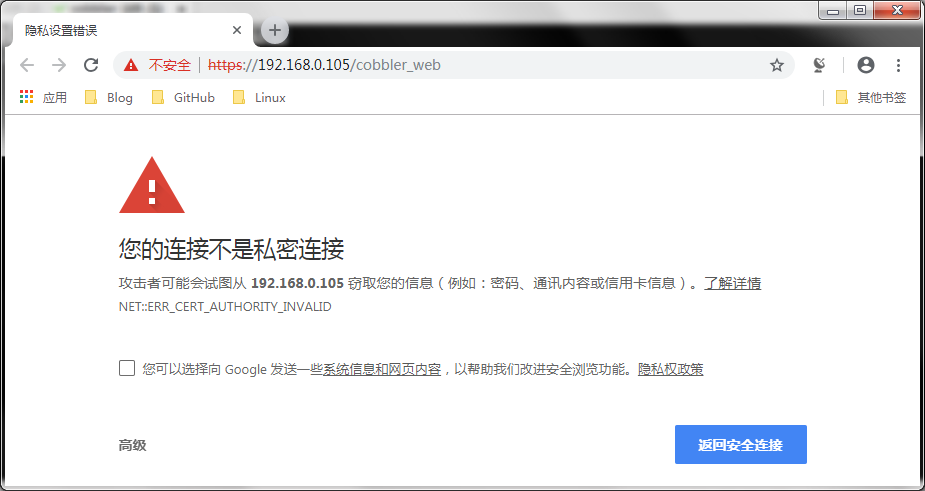
说明：cobbler基于web管理是走的https，证书是自签名证书，浏览器默认会提示用户访问此网站有危险存在，我们可以选择安装证书来信任此网站，也可以点高级继续浏览
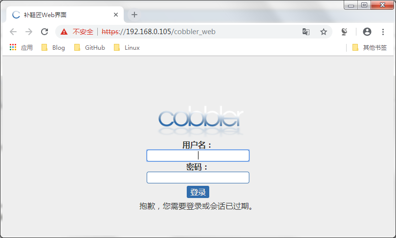
说明：cobbler基于web的方式默认登录用户名是cobbler，密码也是cobbler
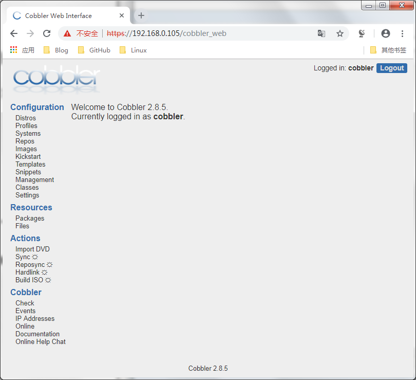
说明：至此cobbler基于web管理方式就搭建完毕，接下来再说说cobbler-web的用户验证
九、cobbler-web的用户验证配置
1）认证方式配置文件：/etc/cobbler/modules.conf
[root@cobbler ~]# cat /etc/cobbler/modules.conf
# cobbler module configuration file
# =================================
# authentication:
# what users can log into the WebUI and Read-Write XMLRPC?
# choices:
# authn_denyall -- no one (default)
# authn_configfile -- use /etc/cobbler/users.digest (for basic setups)
# authn_passthru -- ask Apache to handle it (used for kerberos)
# authn_ldap -- authenticate against LDAP
# authn_spacewalk -- ask Spacewalk/Satellite (experimental)
# authn_pam -- use PAM facilities
# authn_testing -- username/password is always testing/testing (debug)
# (user supplied) -- you may write your own module
# WARNING: this is a security setting, do not choose an option blindly.
# for more information:
# https://github.com/cobbler/cobbler/wiki/Cobbler-web-interface
# https://github.com/cobbler/cobbler/wiki/Security-overview
# https://github.com/cobbler/cobbler/wiki/Kerberos
# https://github.com/cobbler/cobbler/wiki/Ldap
[authentication]
module = authn_configfile
说明：cobbler-web默认配置方式是authn_configfile，从上面的注释信息可以了解到 /etc/cobbler/users.digest是保存cobbler-web的用户信息
2）查看/etc/cobbler/users.digest文件
[root@cobbler ~]# cat /etc/cobbler/users.digest
cobbler:Cobbler:a2d6bae81669d707b72c0bd9806e01f3
[root@cobbler ~]#
说明：此文件的格式用户名：领域：加密的口令
3）添加用户
[root@cobbler ~]# cat /etc/cobbler/users.digest
cobbler:Cobbler:a2d6bae81669d707b72c0bd9806e01f3
[root@cobbler ~]# htdigest /etc/cobbler/users.digest Cobbler admin
Adding user admin in realm Cobbler
New password:
Re-type new password:
[root@cobbler ~]# cat /etc/cobbler/users.digest
cobbler:Cobbler:a2d6bae81669d707b72c0bd9806e01f3
admin:Cobbler:ea0fd5384fa2ee91ab834bba50fc90a4
[root@cobbler ~]#
说明：htdigest添加用户的时候，需要指明存用户信息的文件，领域（cobbler_web的领域必须是Cobbler），用户，然后回车输入口令，它就会在指定存放用户名口令的文件里记录我们创建的用户信息
4）用新创建的用户登录
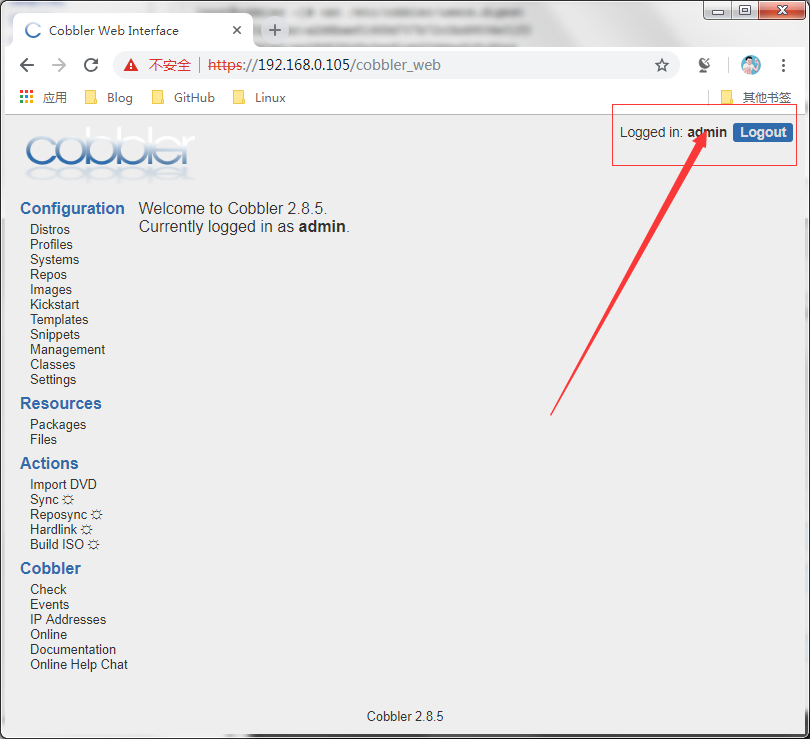
说明：可以看到我们刚才创建的用户是可以正常登录系统的
5） 使用authn_pam模块认证cobbler_web用户
1）编辑/etc/cobbler/modules.conf，将[authentication]语句下的 module = authn_configfile 修改为 module = authn_pam
[root@cobbler ~]#
oot@cobbler ~]# vim /etc/cobbler/modules.conf
▽
# cobbler module configuration file
# =================================
# authentication:
# what users can log into the WebUI and Read-Write XMLRPC?
# choices:
# authn_denyall -- no one (default)
# authn_configfile -- use /etc/cobbler/users.digest (for basic setups)
# authn_passthru -- ask Apache to handle it (used for kerberos)
# authn_ldap -- authenticate against LDAP
# authn_spacewalk -- ask Spacewalk/Satellite (experimental)
# authn_pam -- use PAM facilities
# authn_testing -- username/password is always testing/testing (debug)
# (user supplied) -- you may write your own module
# WARNING: this is a security setting, do not choose an option blindly.
# for more information:
# https://github.com/cobbler/cobbler/wiki/Cobbler-web-interface
# https://github.com/cobbler/cobbler/wiki/Security-overview
# https://github.com/cobbler/cobbler/wiki/Kerberos
# https://github.com/cobbler/cobbler/wiki/Ldap
[authentication]
module = authn_pam
"/etc/cobbler/modules.conf" 83L, 3069C 已写入
[root@cobbler ~]#
2）创建系统用户
[root@cobbler ~]# useradd -r -s /sbin/nologin cobbleradmin
[root@cobbler ~]# id cobbleradmin
uid=997(cobbleradmin) gid=993(cobbleradmin) 组=993(cobbleradmin)
[root@cobbler ~]# getent passwd cobbleradmin
cobbleradmin:x:997:993::/home/cobbleradmin:/sbin/nologin
[root@cobbler ~]#
[root@cobbler ~]# passwd cobbleradmin
更改用户 cobbleradmin 的密码 。
新的 密码：
无效的密码： 密码少于 8 个字符
重新输入新的 密码：
passwd：所有的身份验证令牌已经成功更新。
[root@cobbler ~]# 3）编辑/etc/cobbler/users.conf
oot@cobbler ~]# vim /etc/cobbler/users.conf
▽
# Cobbler WebUI / Web Services authorization config file
#
# NOTICE:
# this file is only used when /etc/cobbler/modules.conf
# specifies an authorization mode of either:
#
# (A) authz_configfile
# (B) authz_ownership
#
# For (A), any user in this file, in any group, are allowed
# full access to any object in cobbler configuration.
#
# For (B), users in the "admins" group are allowed full access
# to any object, otherwise users can only edit an object if
# their username/group is listed as an owner of that object. If a
# user is not listed in this file they will have no access.
#
# cobbler command line example:
#
# cobbler system edit --name=server1 --owner=dbas,mac,pete,jack
#
# NOTE: yes, you do need the equal sign after the names.
# don't remove that part. It's reserved for future use.
[admins]
admin = "cobbleradmin"
cobbler = ""
"/etc/cobbler/users.conf" 28L, 860C 已写入
[root@cobbler ~]#
4）重启cobblerd服务后登录
[root@cobbler ~]# systemctl restart cobblerd
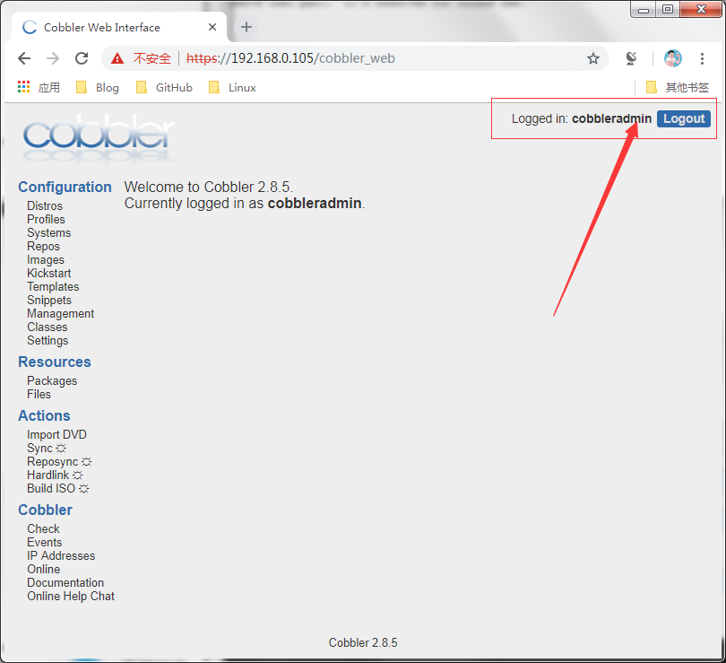
到此cobbler-web用户基于pam验证配置就完成了，后续我们就可以开心的在网页上点点来管理cobbler了